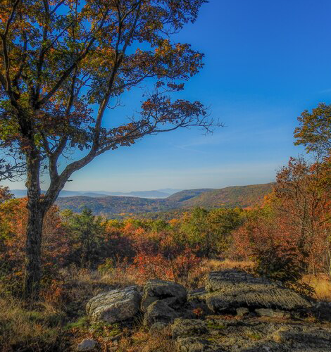

NATIONAL GEOGRAPHIC
This trail may be the best way to see New England’s fall colors
TRAVEL
- 
Each year, millions flock to the Berkshires in western Massachusetts seeking a couple days of sugar maple tree therapy. The region’s scenic allure peaks in the fall, when the hardwood forests transform into a palette of amber and gold. With the Housatonic River rumbling through the painted valleys, it’s easy to see how the Berkshires became a destination for long, meditative walks.
Now, a new regional pathway across the spine of the Berkshires is turning the local tradition of long walks into an American spin on the European “walking holiday” popular with pilgrims journeying on Spain’s Camino de Santiago or Scotland’s West Highland Way.
Once completed, the High Road will offer direct access to not just wildlife preserves and conservation lands, but also picturesque mountain towns, such as Great Barrington and Lenox, home to famed Tanglewood Music Center about 42 miles east of Albany, New York. Unlike thru-hikes that require carrying hefty backpacks and sleeping in tents, travelers on the High Road can refuel at a local restaurant and spend the night at a cozy B&B before ambling onwards the next day.
In addition to drawing more travelers to the Berkshires, the trail possesses an egalitarian spirit balancing two ideas, says Deanna Oliveri, project manager with the Berkshires Natural Resources Council (BNRC), which oversees conservation land across the mountains.
Oliveri says that when the BNRC’s former president, Tad Ames, proposed the idea for the High Road in 2015, the focus was on showcasing nature, similar to the interconnected walking tours of Europe. “But since the project has taken off,” she adds, “there’s also been an emphasis on creating more access to conservation lands, especially for communities that haven’t been as well served by projects like the High Road.”
The High Road’s Lenox-Pittsfield trail
The new route will consist of seven to eight 10-mile segments that run north-to south through the mountains and their communities. Currently, just one segment is open, with two official trailheads: one at the Bousquet Mountain ski resort in Pittsfield and another at the Kripalu Yoga Center campus in Lenox. The centerpiece of this Pittsfield-to-Lenox section is the Yokun Ridge, a lumbering foundation of conjoined peaks thick with a diverse array of deciduous and boreal forests.
At 2,146 feet above sea level, Lenox Mountain is the highest point along this route. From the summit, a bench offers panoramic views of farms, ponds, and New York’s neighboring Taconic Range. A lesser known highlight is Mahanna Cobble, an overlook near the Bousquet Mountain trailhead revealing an expanse of undeveloped woodlands.
A pristine view like this one, free of any human development, can be surprisingly rare in Berkshire County. The western side of the mountains, through which the segment runs, is home to some of the region’s largest towns and farms.
The descent from Lenox Mountain toward Lenox village follows secluded woodland trails and old fire roads that have been slowly reclaimed by the understory. With its mossy dock, glassy Monks Pond foreshadows the High Road’s finish line at the hills of the Kripalu campus, where walkers are likely to cross paths with yogis honing their king pigeon pose. A short uphill walk from the Kripalu trailhead along West Street leads to the center of Lenox village.
Here, amid Queen Anne cottages and flowering patios, traversing the High Road takes on a more decadent flavor. After checking in and cleaning up at the Apple Tree Inn or The Constance, travelers can revel in their achievement over a local hefeweizen and pasta while contemplating the walk back to Pittsfield the next morning; the tributary paths that connect residential areas like Lenox to the High Road’s Yokun Ridge route offer an array of possibilities.
An ancient tradition with a modern goal
While the High Road rekindles the ancient tradition of pilgrimage routes, it adds a contemporary focus on improving public access to the outdoors. The trail map for the first section, for example, highlights existing paths within the region that connect towns and the High Road’s main route.
Comments :
- john Very good
- john Very good
Leave a Reply
Your email address will not be published. Required fields are marked*
Related posts:
-
 Atlantic horseshoe crab
Atlantic horseshoe crabAtlantic horseshoe crabs may appear alien, but their history as earthlings is pretty impressive. They’ve been around for 450 million years, predating the dinosaurs by more than 200 million years. They live on the Atlantic coast of North America
View article -
 Bombardier beetles
Bombardier beetlesBombardier beetles have the infamous ability to synthesize and release rapid bursts of stinky, burning-hot liquid from their rear ends. These noxious emissions can kill other insects, or startle potential predators into backing off.
View article -
 Wild turkeys are at a record high in New England but not all are thankful.
Wild turkeys are at a record high in New England but not all are thankful.AMHERST, NEW HAMPSHIREWild turkeys are a familiar sight throughout New Hampshire, where flocks strut along roadsides and wander through backyards.
View article